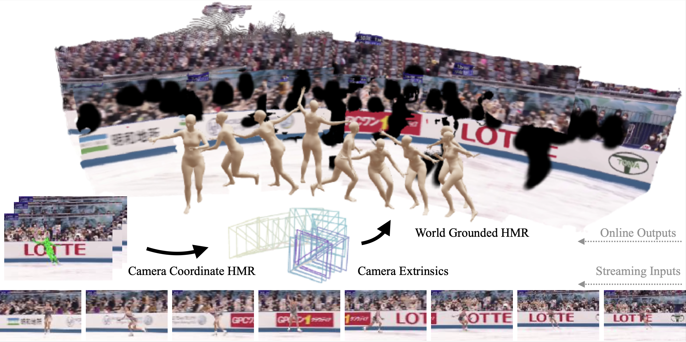
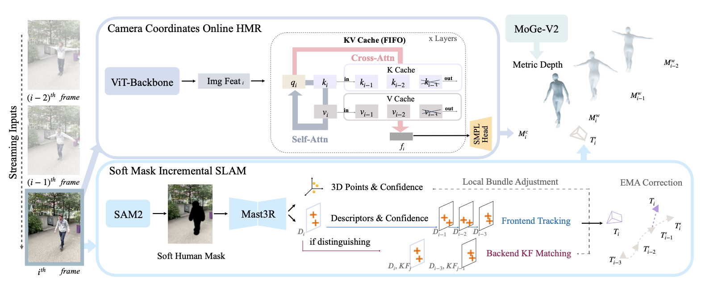
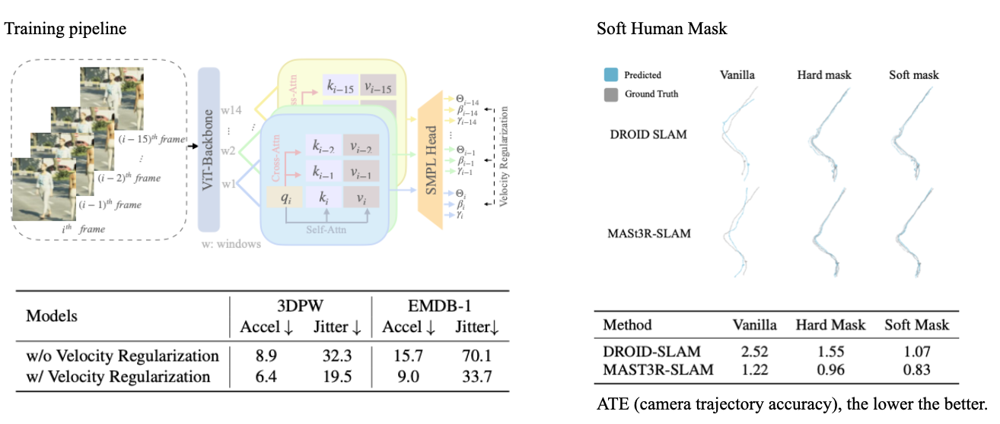
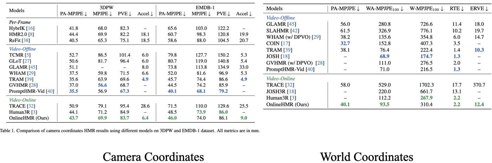

OnlineHMR: Video-based Online World-Grounded Human Mesh Recovery

Given a streaming video as input, OnlineHMR recovers the world coordinates human mesh and camera trajectory in an online manner.

Explore the 4D reconstruction results of MonST3R on various dynamic scenes. For more results, please visit the interactive results.
(Results are downsampled 4 times for efficient online rendering)
Human mesh recovery (HMR) models 3D human body from monocular videos, with recent works extending it to world-coordinate human trajectory and motion reconstruction. However, most existing methods remain offline, relying on future frames or global optimization, which limits their applicability in interactive feedback and perception-action loop scenarios such as AR/VR and telepresence. To address this, we propose OnlineHMR, a fully online framework that jointly satisfies four essential criteria of online processing, including system-level causality, efficiency, faithfulness, and temporal consistency. Built upon the TRAM architecture, OnlineHMR enables streaming inference via a causal key–value cache design and a curated sliding-window learning strategy. Meanwhile, a human-centric incremental SLAM provides online world-grounded alignment under physically plausible trajectory correction. Experimental results show that our method achieves performance comparable to existing chunk-based approaches on the standard EMDB benchmark and highly dynamic custom videos, while uniquely supporting online processing.
Leveraging information only from previous frames through a cache memory.


Alleviate camera coordinate human jittering through sliding window learning. Handling a large proportion of dynamic humans on SLAM by soft masking. Enforce smooth camera extrinsic switching through physical constraints on the camera. Together, get a more natural world coordinate human.Quantitatively, we compare our result with previous and concurrent offline/online methods on camera coordinate benchmark 3DPW and EMDB1, and world coordinate benchmark EMDB2. Qualitatively, we task our method on custom art and sport videos.
